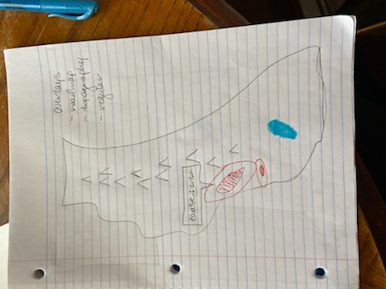
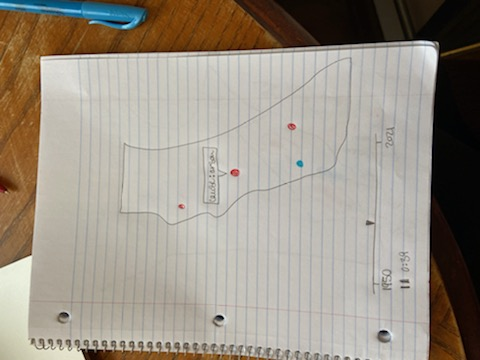
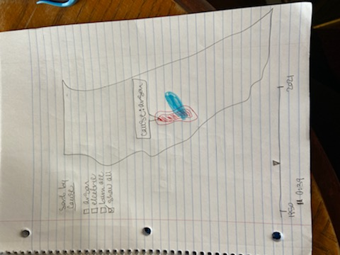
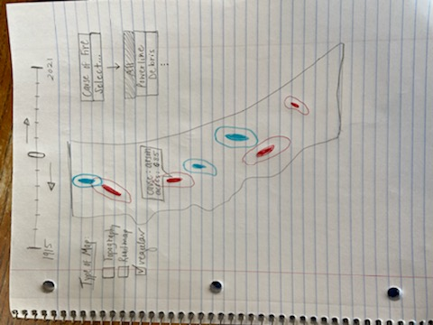

Project title: California Fires and Resulting Burned Areas
Sophia Rosset | srosset@wustl.edu | 464319
Katie Steinmeyer | ksteinmeyer@wustl.edu | 464398
Link to project repo:
https://github.com/srosset13/cse457finalprojectWe chose to focus on California forest fires and the resulting burned areas because one of us took a class on natural disasters last semester, and became interested in the ways these disasters spread and affect surrounding land. Particularly in the state of California, wildfires are extremely prominent. We wanted to use this project as an opportunity to display how these fires have affected land in the state throughout the past century. We both also made it a priority to incorporate a map into our final visualization. We enjoy the way geospatial data conveys information into an absorbable format that might otherwise be hard to understand. Additionally, natural disaster data translates particularly well to a map-style visualization.
Through our visualization we would like to show the progression of fires in California over time. There are two main aspects of the fires we want to show: the changing wildfires over time and the relationship between prescribed burns and wildfires. Showing how the fires have changed both in size, location, and intensity would educate viewers on the severity of the California fire problem. Additionally we would like to show the causes of the fires so that could be linked to the fire (the causes are included in our dataset). Lastly if possible we would like to show the relationship between prescribed burns (fires set on purpose) and wildfires that end up out of control. Do prescribed burns reduce wildfires or do they run out of control and cause wildfires?
California fire data sets:
https://gis.data.ca.gov/datasets/CALFIRE-Forestry::california-fire-perimeters-all/about https://gis.data.ca.gov/datasets/CALFIRE-Forestry::prescribed-burns/aboutBoth datasets are available in geojson formats.
We will need an enum for the fire causes from the fire-perimeters dataset to map the causes onto in order to display them. We will need to create a geopath.
Idea #1: Map will show the wildfires and prescribed fires. We will use heat mapping to display each fire; red will correspond to wildfires, blue will correspond to prescribed fires. We chose red and blue so that a purple color can be shown to represent the prescribed fires that transition into wildfires, as is often the case. This visualization will also include the topographic information by overlaying the topography of the state of California onto the map. This may be useful in identifying the correlation between higher and lower elevations and mountainous areas with fires in California.
Idea #2: Map will show circles based on the geographical location of the fires (both wild and prescribed). Larger circles will represent fires with a greater magnitude. There are several possible causes for wildfires-- upon hovering over a circle, a tooltip will appear, displaying the cause of the wildfire. This design will also include a selection bar in which the user can filter which wildfires are displayed on the map based on their causes. There will be a default “all” option here so that all wildfires are displayed initially.
Idea #3: Map will show the wildfires and prescribed fires using the heatmap and color system described above (red for wildfires, blue for prescribed fires, purple for prescribed fires that become wild). This visualization will also include a timeline in which the viewer can drag a selector back and forth to see how the fires have moved throughout the state. Based on our data, the timeline will go from 1915 to 2021.
Final Design: We have decided our final design will use a heat map if possible to represent the fires so that we can effectively transition from prescribed burns to wildfires if needed. We will use red to illustrate wildfires and blue to show prescribed burns. Ideally in cases where prescribed burns turn into wildfires we will show a transition from blue to red. We will play a video of the fires showing how they have changed over time (starting with the beginning of our dataset and ending at present day). We will also allow users to revisit moments in time by manually moving the slider. We will have a tooltip that allows users to hover over a wildfire center to see the cause of the fire. Additionally, users can sort by the types of wildfires they want to see by checking boxes representing each cause of fires or only clicking see all. Lastly, we will have different types of maps a user can view in order to see other relationships between fires and city centers (shown using a roadmap projection) or between fires and topography (shown using a topographic projection).
Some of the features described above are reaches (the final design will likely not be as robust as the description). Our final design will include the must-have features below and ideally a few optional features.
Way to show wildfires Way to show prescribed burns Tooltip for hovering over wildfires to see the cause and additional information about the fire Way to show change over time (either video timeline or allowing users to select a certain year)
Transition from prescribed fires to wildfires Sorting by wildfire cause Different types of map projections (roadmaps and topographic maps) Additional method of viewing time (either video or selecting year depending on how we decide to do our primary time display)
Proposal: 11/1
Milestone 1: 11/8
Milestone 2: 11/22
Final project: 12/10